2.1. Expresiones algebraicas
En este apartado nos vamos a centrar en las fórmulas.
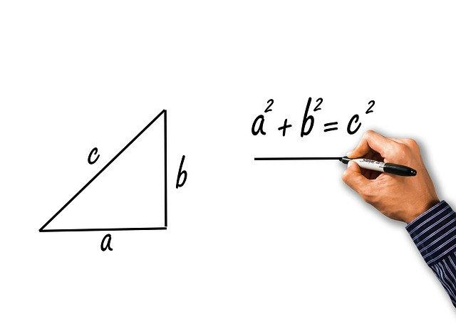
Imagen de Tumisu en Pixabay. Licencia Pixabay
Las primeras fórmulas con las que se suele trabajar en matemáticas son las que están relacionadas con la Geometría (la imagen anterior es la fórmula del teorema de Pitágoras). Por ejemplo, podemos calcular la superficie o el perímetro de una figura aplicando fórmulas que ya conocemos.
Recuerda que la superficie de un cuadrado se calcula elevando al cuadrado la medida del lado, que la del rectángulo se calcula multiplicando la medida de su base por la de su altura y que el perímetro de una figura es la suma de las medidas de todos los lados.
Teniendo en cuenta todo lo anterior, podemos calcular una fórmula para la superficie de la siguiente habitación:
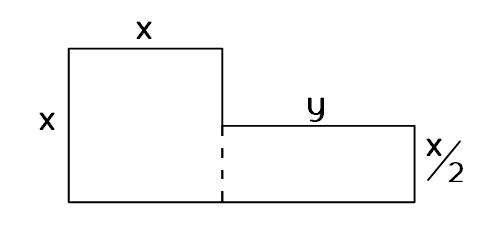
- La parte cuadrada tiene superficie
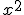
- La parte rectangular tiene superficie
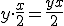
- Uniendo ambas expresiones obtenemos la fórmula para hallar la superficie de la habitación:
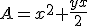
- Por otro lado, el perímetro tendrá la siguiente fórmula:
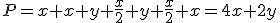
Importante
Lo que hemos obtenido en el ejemplo anterior es una Expresión Algebraica, que es aquélla en la que usamos números y letras relacionadas por operaciones matemáticas.
Una vez que tenemos una fórmula, podemos utilizarla para averiguar el resultado sin más que sustituir las variables por algún valor. A este resultado se le llama valor numérico de una expresión algebraica.
En nuestro caso, podríamos averiguar la superficie y el perímetro de la habitación tanto en el caso de que sea una maqueta como si fuese una casa real, sustituyendo el valor de las variables en la fórmula. Veamos un par de ejemplos:
|
Variables x , y |
Superficie
|
Perímetro |
|
x = 5 cm y = 8 cm |
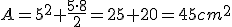 |
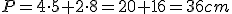 |
|
x = 2,5 m y = 4 m |
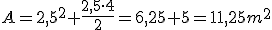 |
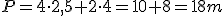 |
Caso práctico
Vamos a buscar una fórmula que me diga el número de cerillas que necesito para formar los siguientes triángulos.
| Nº de triángulos (n) |
1 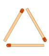 |
2 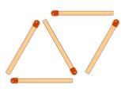 |
3 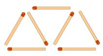 |
4 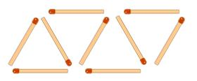 |
| Nº de cerillas (c) | 3 | 5 | 7 | 9 |
¿Cuál es la fórmula que relaciona el número de cerillas con el número de triángulos?
Comprueba que la fórmula es correcta sustituyendo los casos que aparecen en el ejemplo.
Comprueba lo aprendido
Importante
Cuando la expresión algebraica es de estos tipos:
3x·y2; 2x10; 3/4·x2·y5
es decir, está formada únicamente por productos de números y potencias de variables de exponente natural, se denomina monomio.
Todo monomio se divide en dos partes:
- Coeficiente: Es el número que acompaña a las variables. En los ejemplos anteriores, los coeficientes serán 3, 2 y 3/4, respectivamente.
- Parte literal: Es toda el conjunto de variables con sus respectivos exponentes. En los ejemplos anteriores, las partes literales serán
,
y
, respectivamente.
Dos monomios son semejantes si tienen la misma parte literal.
La suma de varios monomios no semejantes es un polinomio.
Comprueba lo aprendido
A continuación, tienes unas preguntas sobre este apartado.
Escena de Consolación Ruiz Gil en Proyecto Descartes. Licencia CC